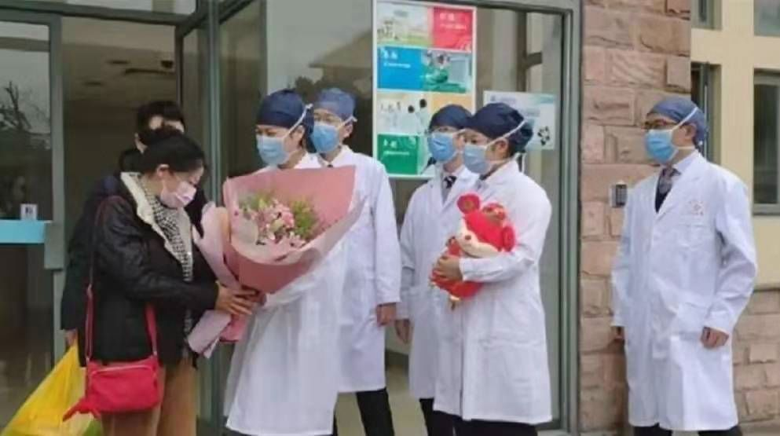
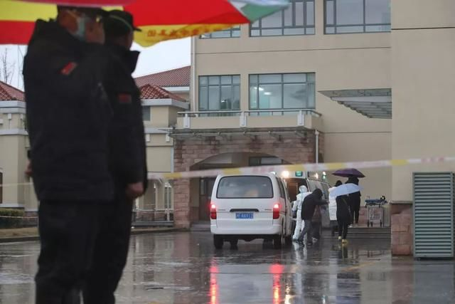
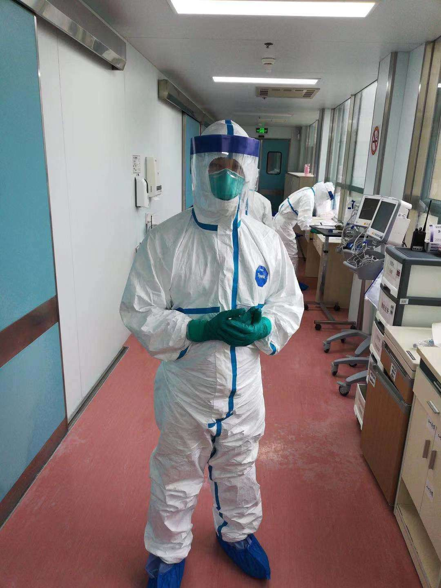
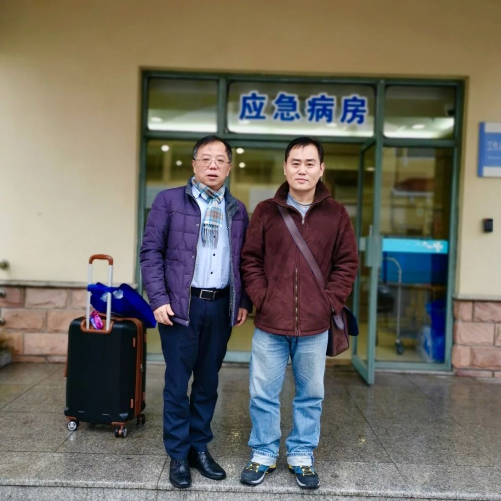

在武汉，有这样一支4000多人的爱心车队
原文链接 备份链接 武汉封城、公共交通全部关停以后，陈述杰和几个朋友一起召集起一支4000多人的爱心车队，为武汉市的医务工作者们提供后援支持。直到1月25号，团队里已知至少三人出现发热，公益接送医生行动暂时停止，他们仍然在帮忙运输医疗物 …

考虑到更好地帮助隔离病房内患者康复，上海卫生主管部门组建支援公卫临床中心的专家团队中，加入了精神科医生。精神科医生在隔离病房也有助于保障医护人员心理健康。
记者 | 黄 祺
这是陈俊医生在新冠肺炎隔离病房工作的第二天。
陈俊，上海市精神卫生中心心境障碍诊疗专家、临床研究中心办公室主任。目前，他是上海市公共卫生临床中心（以下简称公卫临床中心）里唯一一名精神科医生，2周后，他的同事将接替他继续在这里工作。
考虑到更好地帮助隔离病房内患者康复，上海卫生主管部门组建支援公卫临床中心的专家团队中，加入了精神科医生。精神科医生在隔离病房也有助于保障医护人员心理健康。
位于上海市金山区的复旦大学附属上海市公共卫生临床中心，是上海收治新型冠状病毒引发肺炎患者定点医院。近几天，不断有刚被确诊的患者进入病房治疗。
2008年汶川地震，陈俊曾在什邡工作1个月。“隔离病房环境特殊，患者有可能出现情绪问题，有我们专业的精神科医生在是一种保障，也是社会进步的表现，大家都意识到患者的康复不仅仅是身体康复，心理康复也很重要。同时，保障我们医务工作者的心理健康，在这个特殊的时期也非常重要。”
1月27日晚上8点，脱下防护服不久的陈俊医生，接受了《新民周刊》的采访。

进入隔离病房一天半的工作时间，陈俊医生已经为隔离病房内几位患者进行了心理干预，有的给予了抗焦虑，改善睡眠等药物治疗。“其实，这也很正常，在某些特殊时刻，尤其是面临重大心理压力的时候，人们都会出现情绪和行为的改变，从心理学角度上讲，这是一种应对方式，也是一种自我保护。目前隔离病房患者大部分情绪是乐观的，少数出现应激反应的患者，症状也很轻微，经过疏导基本都缓解了。”陈俊医生说，公卫临床中心医护人员目前心理健康情况也很好。
上海市精神卫生中心表示，后续还将根据需要和上级统一部署，派遣相关专家参与心理援助工作，包括组建专家队伍赴武汉与前线的医务人员并肩作战，直到疫情完全控制。
及时发现和干预患者精神症状
1月27日，两位新型肺炎患者从公卫临床中心病房走出，两位患者已经达到出院标准，痊愈出院。患者和医护人员在大楼门口合影时，陈俊医生从二楼的窗口向下望着楼下的场景，感到欣慰和鼓励。

前一天上午，大年初二，陈俊医生，正式进驻新型肺炎隔离病房工作。作为上海市向公卫临床中心提供的专家支援团队成员，陈俊将在这里工作两周。专家团队其他的医生都是呼吸科或者感染科专家，他是唯一的精神科专家。据了解，向隔离病房派驻精神科医生，上海是行动最早的城市。
“有精神症状的患者是少数，而且症状都很轻，经过干预或者用一些简单的药物，就可以改善。目前看效果都不错。”
陈俊医生介绍，第一天到病房的时候，有一位患者担心自己的肺炎治不好，自己感觉手脚发麻，失眠。“我非常害怕，我不敢睡觉，怕睡着后就醒不过来了。”患者告诉陈俊。医生对患者进行了疏导，为了快速有效地解决睡眠问题，予以改善睡眠的药物治疗。“今天上午我再去看她，她说昨天晚上没吃安眠药也睡着了。看起来我们及时的心理干预已经起到了效果。”
另一位患者，有烦躁的表现，烦躁时会扯掉吸氧面罩。针对患者的情况，陈俊为他处方了镇静类药物，帮助患者更好、更安全地配合医护人员的治疗。
医护人员目前积极乐观、休息充分
网上，流传着一些城市医护人员不堪重负嚎啕大哭的视频。在高风险、高压力的工作环境中，医护人员也容易成为精神上的“患者”。
陈俊医生在隔离病房的另一个任务，就是保障医护人员的心理健康。“我们会帮助大家接纳和直面自己的情绪，一起打赢这场战役。”
他介绍，公卫临床中心已经腾挪出一个空间，作为“心灵解压室”，医护人员可以到这个独立的空间咨询。“我一来就把自己的微信二维码打印出来，贴在食堂墙上，医护人员可以加我微信，保证他们得到专业的心理指导。这是一种人性化服务。”
目前公卫临床中心隔离病房医护人员采取轮班制，医生护士每一组工作时间为一周或者两周，工作时间结束，他们会被安排到公卫临床中心一幢专用于隔离观察的宿舍楼里，进行两周的隔离观察和休息。隔离观察期满后，就可以回家了。

图 | 上海观察
陈俊医生说，由于排班和流程安排比较科学，尽管隔离病房里工作强度比较大，但医护人员对工作时长有掌握，所以整体心态还是比较积极的。
“在高压力、高强度下，医护人员也可能出现应激反应，精神科医生在这里是一种保障。”陈俊说。
每次床边精神检查至少15分钟
穿着隔离服做“精神体验”，对陈俊医生来说也是第一次。

“对于患者来说可能是医生跟他攀谈，但实际上我们是用专业的技术对他进行精神检查。攀谈的过程中，我要了解患者是否存在精神症状，有没有躯体反应，最后得出一个精神诊断结论。”
他说，如果是在上海市精神卫生中心诊室，这样的精神检查过程一般需要20分钟以上。但在新冠肺炎隔离病房，考虑患者身体状况和特殊的环境，这个过程尽量压缩，但也不会少于15分钟。在这15分钟里，陈俊医生与患者近距离接触。
两周时间，陈俊医生和其他隔离病房的医护人员一样，住在一楼宿舍，上一层楼就是上班。2周工作结束后，他也要到隔离观察宿舍再独处2周，才能回家。陈俊说，妻子也是医务工作者，一家人都在新冠肺炎救治的一线，一家人共同奋斗。
据上海市精神卫生中心介绍，大年初一下午，上海市卫健委组建心理援助专家队伍到传染病诊疗机构服务。信息发到工作群，陈俊医生和另外8位高级职称的医生在第一时间就报了名。
第一天的工作日记上陈俊医生写道：“有人问我去那里你怕不怕被传染？我内心笃定得很，我相信上海医疗同道们的专业水平。”
更多精神科医生待命去一线
1月26日组建心理援助专家团队的号召发出后，至当晚11时，上海市精神卫生中心全院已有20余位专家报名请缨，其中高级职称专家16人。中心疾控部门负责人蔡军副院长率先启程前往金山，与公卫临床中心相关部门进行工作对接。
当天夜里，他再次赶赴公卫中心，为一位隔离中出现精神症状的老年患者进行了专科诊疗，直到26日凌晨3点才返回精神卫生中心。

蔡军（左）和陈俊（右）两位精神科专家在上海市公共卫生临床中心门口
上海市精神卫生中心介绍，医院已经组建了专家团队，随时准备参加上海和武汉的一线临床工作。
特殊时期，更要关注心理健康
上海市精神卫生中心副主任医师乔颖介绍，在疫情还在持续的特殊时期，无论是一线医护人员还是普通公众，都应该更加关注心理健康。
为此，上海市精神卫生中心的医生们撰写了针对一线医护人员情绪问题的文章，发表在医院公众号上，为一线医护人员提供指导。

一线的医护可能出现的心理问题有：
1.长期过劳导致的身心疲惫，大量付出后因未能控制“新冠肺炎”的情绪压抑和耗竭，面对批评时的绝望孤独和悲愤。
2.面对大量涌入患者感到压力、无助和恐惧。
3.对自己和家人患病的担忧。
4.对何时是尽头的不确定感。
5.对家人的愧疚。
6.看到同事在工作中被感染后的悲哀和无助。
7.公务人员对追责的恐惧，情绪极端压抑。
而普通公众可能出现的心理问题有：紧张焦虑，抑郁，疑病（身体有点不舒服就怀疑自己生病），失眠，强迫，抱怨，易激惹等情绪。
今天中午，上海市精神卫生中心公号发布了对公众的建议，并公布上海市各级心理援助热线电话列表。
文章特别提醒：“因心理热线资源有限，请在自己和身边人出现严重问题时再拨通这些电话，务必把有限的资源让给最需要的人！”

上海市各级心理援助热线汇总表

▼
大家还都在看这些
▼
转载请在评论区留言，获得授权！
转载时，须注明作者、出处和微信号


原文链接 备份链接 武汉封城、公共交通全部关停以后，陈述杰和几个朋友一起召集起一支4000多人的爱心车队，为武汉市的医务工作者们提供后援支持。直到1月25号，团队里已知至少三人出现发热，公益接送医生行动暂时停止，他们仍然在帮忙运输医疗物 …
原文链接 备份链接 【财新网】（记者 宿慧娴）武汉肺炎持续蔓延，截至1月27晚，全国确诊新型冠状病毒感染病例2844例，其中1423例位于湖北省。在湖北当地医疗资源面临超负荷压力之下，阿里健康、平安好医生、微医等多家在线医疗平台的轻问诊 …
原文链接 备份链接 1月28日下午三时，中国青年报·中国青年网记者实地探访武汉市第五医院输液室。 本文约4534字 预计阅读时间12分钟 中青报·中青网记者 王嘉兴 这是一位坚守在抗击新型肺炎一线医生的自述。她经历了疫情初期所在医院的 …
原文链接 备份链接 支援武汉的医护人员已上千，地方900多人，军队450人，随后将再派1600多人。 武汉医护人员身心俱疲，难以应对不断增长的病例和民众的恐慌。 外援的到来，缓解了他们的负担。不少援汉医护人员感到，仅从肺炎诊治难度而 …
原文链接 备份链接 我们做好了奋战半年的打算 武汉大学中南医院重症医学科的护理人员。本刊记者/周群峰 摄 1月25日，大年初一，“封城”下的武汉，小雨绵绵，路上人车稀少。但武汉大学中南医院重症医学科（ICU）的医护人员们无暇过年，依旧忙着 …